Auxiliar 21: Faraday-Lenz
La ley de Faraday-Lenz establece que toda variación del flujo magnético a través de un circuito induce una fuerza electromotriz que se opone al cambio: $\varepsilon = -d\Phi/dt$. Es la tercera ecuación de Maxwell y unifica inducción, inductancia mutua y autoinductancia bajo un mismo principio variacional.
Temas que cubre
- Ley de Faraday-Lenz: $\varepsilon = -d\Phi/dt$ y principio de Lenz (la corriente inducida se opone al cambio de flujo)
- Flujo magnético $\Phi = \iint_S \vec{B}\cdot d\vec{S}$ y su cálculo en geometrías con simetría
- Forma diferencial de Faraday: $\nabla\times\vec{E} = -\partial\vec{B}/\partial t$ (tercera ecuación de Maxwell)
- Forma integral: $\oint_\Gamma \vec{E}\cdot d\vec{\ell} = -\dfrac{\partial}{\partial t}\iint_S \vec{B}\cdot d\vec{S}$
- Espira cayendo en campo magnético no uniforme: corriente inducida, fuerza de frenado y régimen estacionario (velocidad terminal)
- Inductancia mutua $M$: $\mathcal{E}_2 = -M\,dI_1/dt$, simetría $M_{12} = M_{21}$
- Autoinductancia $L$: $\mathcal{E} = -L\,dI/dt$, flujo concatenado $\Phi = LI$
- Bobina giratoria cerca de una placa conductora: corriente inducida en función del tiempo
Conceptos clave
Principio de Lenz
El signo negativo en $\varepsilon = -d\Phi/dt$ no es un accidente: la corriente inducida genera un campo magnético que se opone al cambio de flujo. Si el flujo crece, la corriente inducida lo contrarresta; si decrece, lo refuerza. Es una manifestación de la conservación de energía.
Velocidad terminal
Una espira que cae en un campo no uniforme experimenta una fuerza de frenado proporcional a su velocidad, $F_\text{mag} \propto v$. En régimen estacionario esta fuerza equilibra la gravedad y la espira alcanza la velocidad terminal $v_t = MgR/k^2$, donde $k$ agrupa los parámetros geométricos y del campo.
Inductancia mutua
Cuando la corriente $I_1$ en un circuito varía, el flujo que atraviesa un segundo circuito cambia e induce una fem $\mathcal{E}_2 = -M\,dI_1/dt$. El coeficiente $M$ (en henrios) depende solo de la geometría relativa y cumple $M_{12} = M_{21}$, independientemente de la forma de cada circuito.
Autoinductancia
Un circuito con corriente variable se "autoinducía": el campo que él mismo genera cambia y produce una fem $\mathcal{E} = -L\,dI/dt$ que se opone al cambio de corriente. La autoinductancia $L$ (en H) mide la eficiencia con que el circuito almacena energía magnética: $U = \tfrac{1}{2}LI^2$.
Fórmulas fundamentales





Qué hay que entender
- Siempre comenzar calculando el flujo $\Phi = \iint \vec{B}\cdot d\vec{S}$ a través del circuito. Identificar qué variable cambia con el tiempo ($z$, $\theta$, $I$, etc.).
- Aplicar $\varepsilon = -d\Phi/dt$. Si el flujo crece (por la orientación elegida), la fem es negativa, lo que significa que la corriente inducida fluye en sentido opuesto a la normal elegida por la mano derecha.
- Para determinar el sentido de la corriente inducida usar directamente el principio de Lenz: la corriente se opone al cambio de flujo. Si $\Phi$ aumenta, la corriente crea un campo que se opone al campo exterior.
- En la espira cayendo: usar la componente radial del campo $B_r$ para obtener la fuerza vertical $F_z = I \oint (d\vec{\ell}\times\vec{B})_z$. Usar la ley de Gauss magnética ($\nabla\cdot\vec{B}=0$) para relacionar $B_r$ con $B_z = Cz$: resulta $B_r = -Ca/2$.
- En régimen estacionario $\dot{v} = 0$: igualar la fuerza magnética de frenado con la gravedad para encontrar la velocidad terminal.
- Para inductancia mutua de una bobina giratoria: el flujo varía como $\Phi(t) = M I_0 \cos(\omega t + \phi_0)$, y la corriente inducida es $I(t) = (M\omega I_0 / R)\sin(\omega t + \phi_0)$.
- La autoinductancia de la bobina solenoidal: $L = \mu_0 N^2 \pi r^2 / h$, independiente del ángulo de rotación (propiedad geométrica del bobinado).